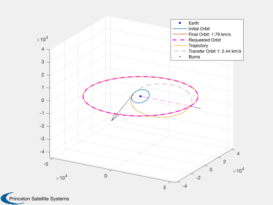

Contents
Optimal impulsive burns from LEO to GEO demo
The optimal DV is about 4.2 km/s from KSC.
See also: OptimizeImpulsiveLVLH, OptDIH, PlotImpulsiveTrajectory
%-------------------------------------------------------------------------- % Copyright (c) 2019 Princeton Satellite Systems, Inc. % All rights reserved. %--------------------------------------------------------------------------
Parameters
300 km altitude LEO, Kennedy Space Center lowest inclination
elInitial = [6384+300 28.6*pi/180 0 0 0 0];
% GEO
elFinal = [42164 0*pi/180 0 0 0 0];
Analytic Solution
The inclination change is optimally distributed between the two Hohmann burns
[DV, dv1, dv2, et, Di1] = OptDIH( 0, elInitial(1), elFinal(5), elFinal(1), elInitial(2) ); fprintf('Analytic DV: %g km/s\n',DV) % see also % OrbMnvrInclAndHohm(elInitial(1),elFinal(1),elInitial(2),elFinal(2))
Analytic DV: 4.23138 km/s
Analytic Targeting
In this case, changing plane second is clearly the lower-DV option for targeting.
% Change plane first - all options [burns0,dVs] = TargetingAnalyticAll( elInitial, elFinal ); % display the lowest DV option fprintf('The lowest delta-V burn found via analytic targeting was \n'); disp(burns0{1,2});
The lowest delta-V burn found via analytic targeting was
Columns 1 through 3
4.99972124110412 -1.5707963267949 0.738664444846229
1.46621536439564 1.5707963267949 1.5707963267949
Column 4
0.5
0.5
Delta-V Optimal solution
[burnsOpt,elOut,opt] = OptimizeImpulsiveLVLH(elInitial,elFinal); OptimizerReport(opt,true); PlotImpulsiveTrajectory(elInitial,burnsOpt,elFinal,'lvlh'); %--------------------------------------
Total Delta-V (km/s):
4.23748493718715
Number of burns:
2
Initial elements, target, achieved:
Columns 1 through 3
6684 0.499164166070378 0
42164 0 0
24422.7441996062 0.469257155518934 6.28081394472729
42163.3136398093 3.17205789231316e-06 6.27843703411682
Columns 4 through 6
0 0 0
0 0 0
3.13884009083321 0.726416032677561 0.0044333522653939
3.1422002512149 1.8830887109205e-06 -3.13982331907052
Mission duration:
6.05212 Time (hours)
Cost value:
4.23748493718715
Iterations:
165
Burns (lvlh: DV, alpha, beta, dT):
Columns 1 through 3
2.44315113985297 -0.0717278670507704 0.124573249470588
1.79433379733419 -0.0176720186385992 -0.88656410062512
Column 4
0.505705064995488
0.501194306598001
